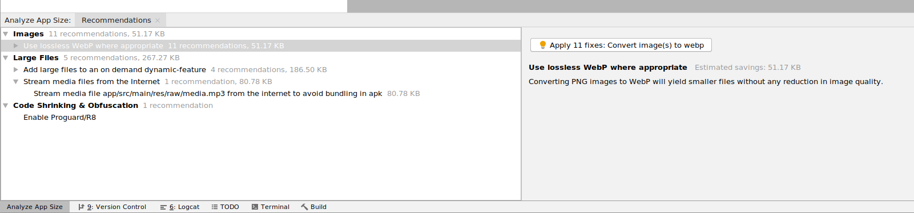
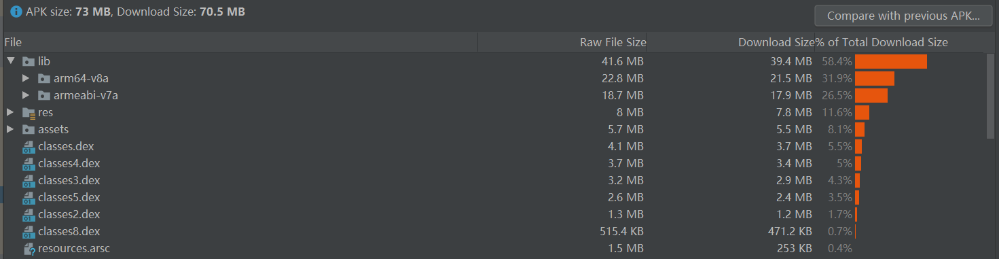

Andoid性能优化之APK大小
用户总是希望要下载的应用小一些，尤其是在设备没有连接 WIFI 的情况下。 同时，缩减APK大小，可显著降低应用的内存使用量、减少应用耗电。 下面我们就来学习一下如何缩减安装包大小。
缩减资源数量和大小
- 移除未使用的资源
项目中可能包含未使用的资源（res/文件夹中的内容）。如果在应用的 build.gradle 文件中启用 shrinkResources，那么 Gradle 在打包时会自动移除未使用的资源。
android { // Other settings buildTypes { release { //true 启用混淆 minifyEnabled true //true 启用资源移除 shrinkResources true proguardFiles getDefaultProguardFile('proguard-android.txt'), 'proguard-rules.pro' } } }要使用 shrinkResources,开发者必须先启用 minifyEnabled(代码混淆)。在编译过程中，Studio 首先移除未使用的代码，然后再移除未使用的资源
-
第三方依赖库，要尽可能小
开发 Android 应用的过程中，开发者经常需要引入外部库。这些库可能包含应用不需要的许多对象和方法。 从代码角度最优解是只引入需要的代码，但这需要额外的开发时间，平时开发中要做好两者的平衡。
-
关于图片
仅支持特定密度：Android 支持多种屏幕密度：ldpi、mdpi、tvdpi、hdpi, xhdpi、xxhdpi 和 xxxhdpi。开发者无需将图片导出为每个密度（显著增大APK大小 且 难以维护）。 推荐使用 xxhdpi 存放图片。其他屏幕密度的手机在使用图片时，Android 会自动缩放 或 放大该目录下的图片。
使用 Drawable对象（XML中的shape标签） 代替图片。减少APK 大小。
重复使用图片：通过旋转把左箭头变为右箭头。
代码渲染：在 View 的 onDraw() 内通过 API 绘制图像。
图片格式：使用 SVG 和 WebP 代替 JPG 和 PNG。在使用 JPG 和 PNG 格式图片时，先进行压缩。 关于图片格式的对比分析，请参考 Android 图片格式选择。
减少代码
- 避免使用枚举：单个枚举会使应用的 classes.dex 文件增加 1.0 到 1.4 KB的大小。考虑使用 @IntDef 代替枚举。它保留了枚举的各种安全优势。
- 避免解压缩原生库：在 Manifest 的 <application> 标签中设置 android:extractNativeLibs="false",将未压缩 .so 文件打包在 APK 中。 停用此标记可防止 PackageManager 在安装过程中将 .so 文件从 APK 复制到文件系统，并具有减小应用更新的额外好处(只适用于Google Play)。 使用 Android Gradle 插件 3.6.0 或更高版本构建应用时，插件会默认将此属性设为 "false"。 需要注意的是该值设为false，会导致 APK 中的 .so 文件大小增加许多。
-
支持 armeabi-v7a 和 arm64-v8a ABI(应用二进制接口)：
-
Android 支持的ABI类型如下：
- armeabi-v7a
- arm64-v8a
- x86
- x86_64
在实践过程中发现： APP支持 rmeabi-v7a 和 arm64-v8a 即可兼容绝大部分的 Android 设备， 我司的 APP 木有发现因不支持 x86 和 x86_64 ABI 导致的兼容问题。移除这两个文件夹下的 .so 文件，可显著减少 APK 大小。
App Bundle
Google Play 支持将应用发布为 Android App Bundle。这是一种全新的上传格式，其中包含应用的所有代码和资源，但APK生成以及签名工作则交给Google play来完成。
Google Play 会使用您的 App Bundle 针对下载设备生成优化过的APK，用户只需要下载需要的资源，已获得更小、更优化的APK。开发者也无需再编译、签名、和管理不同的APK。
需要注意的是：对使用 App Bundle 发布的应用，Google Play 强制规定APK大小不超过150M。 使用上传签名APK方式 发布到 Google Play 的应用，Google Play 强制规定APK大小不超过100M。
国内用户，很难访问 Google Play。应用在国内应用市场上架，开发者只能使用 上传签名APK文件的形式。 这种方式也有一个好处，我们可以上传加固过的APK。防止应用被盗版破解。
Android Size Analyzer
Android Size Analyzer 插件能找出可以优化的地方，并给出优化建议。帮助我们减少 APK 大小。要安装该插件，请按以下步骤操作：
- 依次选择 File > Settings（或在 Mac 上，依次选择 Android Studio > Preferences）。
- 选择左侧面板中的 Plugins 部分。
- 点击 Marketplace 标签。
- 搜索“Android Size Analyzer”插件。
- 点击 Android Size Analyzer 插件的 Install 按钮。
安装插件后，从菜单栏依次选择 Analyze > Analyze App Size,对当前项目运行应用大小分析。 分析结果显示在一个工具窗口，其中包含优化建议。如下图所示：
您也可以从 GitHub 以 TAR 或 ZIP 文件形式下载最新版本的 Android Size Analyzer。解压缩文件后， 使用以下某个命令对 Android 项目或 Android App Bundle 运行 size-analyzer 脚本（在 Linux 或 MacOS 上）或 size-analyzer.bat 脚本（在 Windows 上）：
./size-analyzer check-bundle <path-to-aab>
./size-analyzer check-project <path-to-project-directory>
APK 分析器
Android Studio 包含 APK 分析器，可以帮助我们分析APK的组成。把 APK 拖动到 Android Studio 的 Editor 窗口。即可使用该功能。
APK 分析器会显示每个文件的原始大小和下载大小，如下图所示。 Raw File Size 表示文件在磁盘上未经压缩时的大小， Download Size 则表示文件由 Google Play 压缩后的下载大小。 % of Total Download Size 表示文件占 APK 总下载大小的百分比。
在上图的例子中，最影响APK大小的就是lib中的 .so 文件，58%的份额。那我们可以知道要优化该APK大小，应从减少 .so 文件方面考虑。
分析 APK 大小，只是 APK 分析器的一个功能，还有其他功能，感兴趣的小伙伴请移至官网学习。